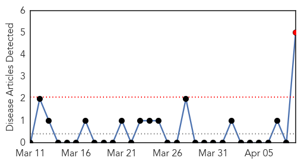
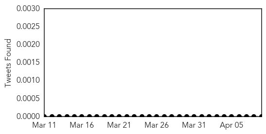

30 Day Trends
Web: 1 alerts, 0 warnings
Twitter: 0 alerts, 0 warnings
Top Articles:
- 0.907
- 10 New Pertussis Diagnoses Reported Last Week in San Diego...
- 0.779
- Whooping cough outbreak seizes southern Alberta
- 0.755
- Meghan Mcnutt-Anderson's Whooping Cough Baby Photo A Warning To Anti-Vaccine Parents
- 0.721
- Mandatory vaccinations expanding for Waterloo Region students
- 0.644
- You don’t have right to imperil all children with vaccine choice
Top Tweets:
-
No tweets found for Apr 09, 2014
Web/News Articles
Tweets
Article Locations

Article Confidences